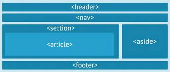

Borrador de contenidos.
Recio García, J. A. (2016). HTML5, CSS3 y JQuery: curso práctico. RA-MA Editorial. p. 52 a 142. https://elibro-net.bibliotecavirtual.unad.edu.co/es/ereader/unad/106494?page=52
Terán Anciano, J. (2016). Manual de Introducción al lenguaje HTML. Formación para el Empleo. Editorial CEP, S.L. p. 134 -140. https://elibro-net.bibliotecavirtual.unad.edu.co/es/ereader/unad/50964?page=134
Avila Pérez, M. (2020). O.V.I. Aplicando Hojas de Estilo en Cascada CSS. [Video]. https://repository.unad.edu.co/handle/10596/37679
Ochoa Torres, J. (2018). O.V.I. Definición de HTML5. [Video]. http://hdl.handle.net/10596/22593
